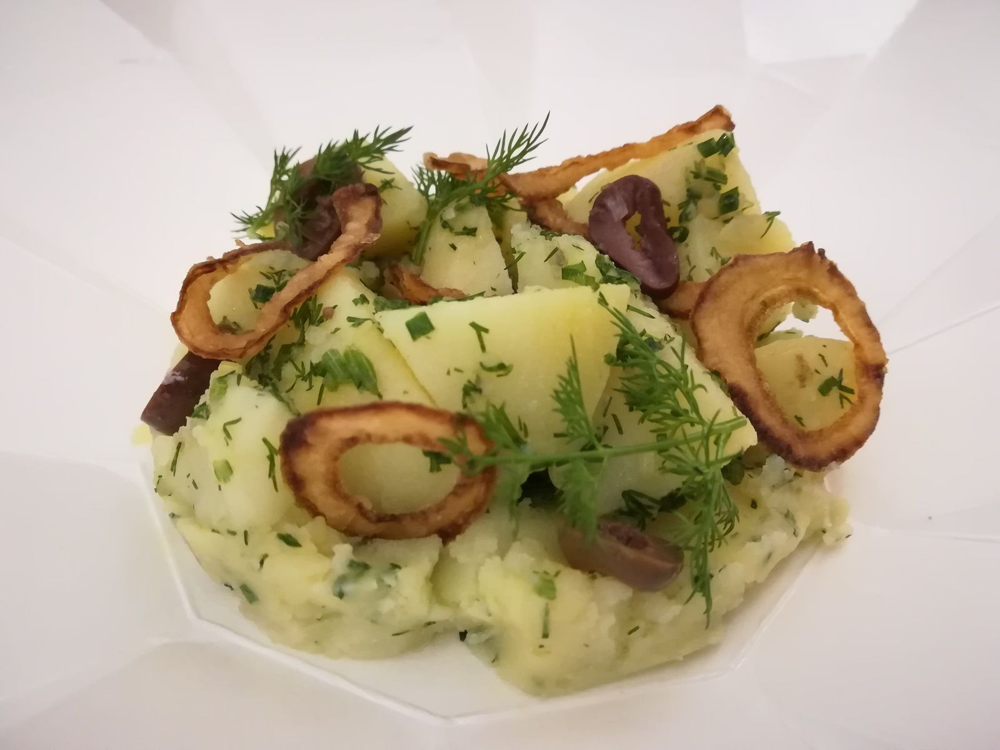
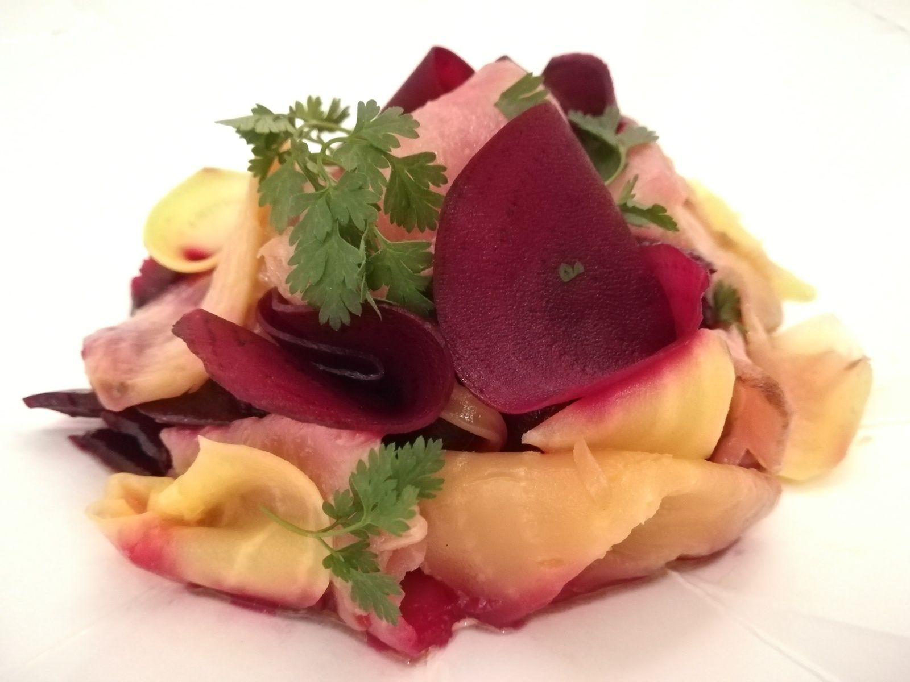
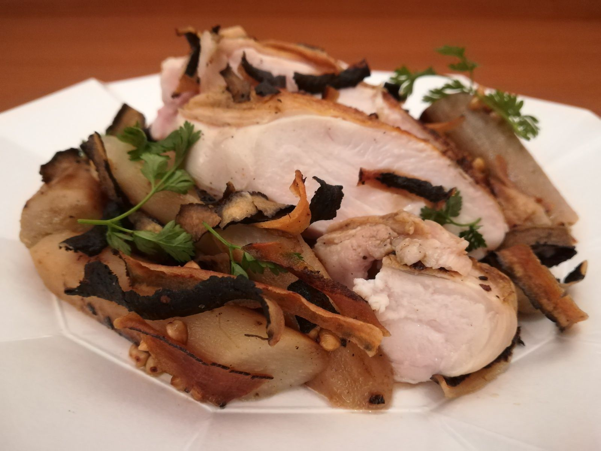
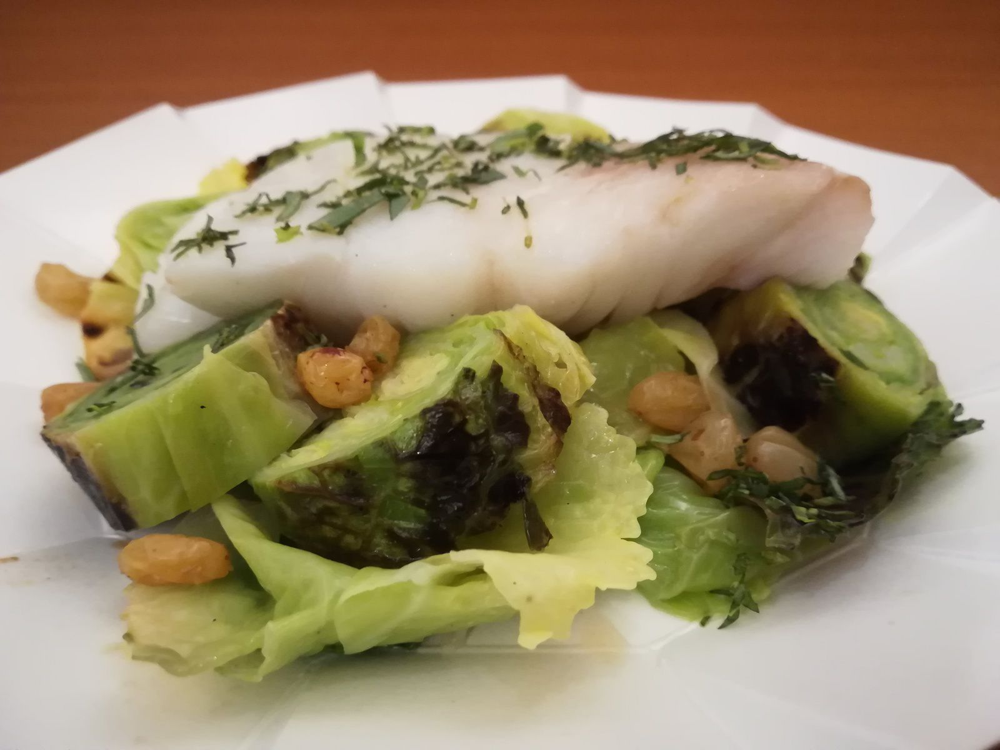

LA GRANDE DAME
Le restaurant propose trois menus, entrée, plat, dessert à 29€ : Veggie, Mer et Terre. Il y en a pour tous les goûts ! J'ai pris les trois pour une découverte complète et me suis rendue sur place pour récupérer ma commande. Dès l'entrée je suis saluée par l'équipe, le chef Thibault Loubersanes est à l’œuvre derrière son comptoir et nous discutons un peu le temps que ma commande arrive. On me remet mon sac, imposant, avec une boîte par menu et dans chaque boîte, plein de jolis contenants en origami Tiptoque... Le plaisir des yeux est prometteur ! En entrée, dans deux des menus il est proposé une salade de pommes de terre, oignons frits, olives, et dans le troisième, une betterave confite fumée, fromage frais.
La salade de pommes de terre est fraîche et bien relevée grâce à la sauce acidulée et aux herbes ciselées, notamment l'aneth. Les oignons ont un peu ramolli suite au transport, mais on a du fondant, du croustillant et de l'acidité tout en fraîcheur. L'ensemble fonctionne bien !
La betterave confite fumée est un délice de légume en provenance de chez Monsieur Rigault. Là encore les saveurs sont au rendez-vous avec des assaisonnements vifs et subtils à la fois. Bien vu aussi les betteraves en mode bicolore, l’œil en profite... Ces entrées m'ont convaincue, passons maintenant aux plats... Le suprême de volaille est parfaitement poché et tendre, les salsifis qui l'accompagnent ce jour-là sont fondants et gourmands : leurs peaux grillées apportent de la texture et du goût au plat, avec le sarrasin torréfié c'est une idée maline que j'ai appréciée !
J'aurais quand même aimé une peau de volaille croustillante, cela aurait rendu le plat encore plus gourmand. De plus un (tout) petit hic : la sauce qui était prévue s'est révélée être de la mayonnaise, et sans autre instruction que "Ajoutez la sauce au plat" sur la petite étiquette Tiptoque, je l'avais fait chauffer, oups... Heureusement, comme la volaille est moelleuse, la sauce ne m'a pas manqué.
Le plat de poisson est un beau lieu jaune, légumes du moment et beurre blanc. Le lieu jaune nacré est servi avec de beaux choux braisés et des raisins acidulés. C'est réconfortant et vif à la fois, et cette mise en valeur de produits de saison me plaît beaucoup.